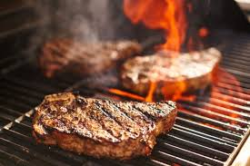
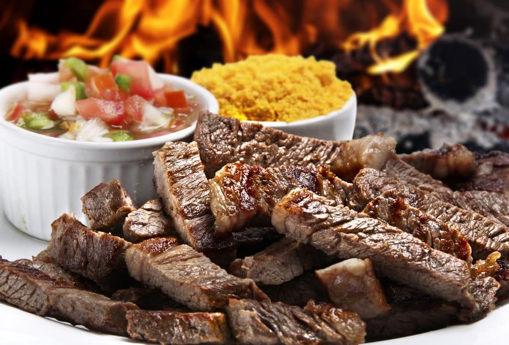

Manual de Sobrevivencia no Churrasco
Dicas e Regras Não Escritas, mas Levadas a Sério
Acenda o Fogo
Cortes de Carne
Dicas e Regras
Envie suas Dicas
Regras de Ouro do Churrasco
🔥
O fogo é do assador
— Não mexa na churrasqueira sem ser convidado.
🥩
Não fure a carne!
— Use pinça, não garfo. Preserve os sucos da carne.
🧂
Sal é o rei
— Esqueça temperos complexos. Sal grosso já faz mágica.
🍺
Leve bebida se for beber
— Ninguém gosta do primo que só chega pra consumir.
⏱️
Paciência é essencial
— Costela não assa em 30 minutos. Respeite o tempo da brasa.
🧽
Lave o que usar
— Quem usa tábua, lava a tábua. Gratidão em forma de espuma e sabão.
🎶
Música sim, show não
— Cuide da trilha sonora. O churrasco não é rave.
😋
Respeite a vez de servir
— Nada de avançar na grelha. Tem ordem na carne!
🥗
Lembre dos vegetarianos
— Eles também merecem um espaço no grill (e respeito).
😂
Churrasco é diversão
— Leve o bom humor. Reclamar do ponto da carne dá ban!
 
Dicas de Vídeo: